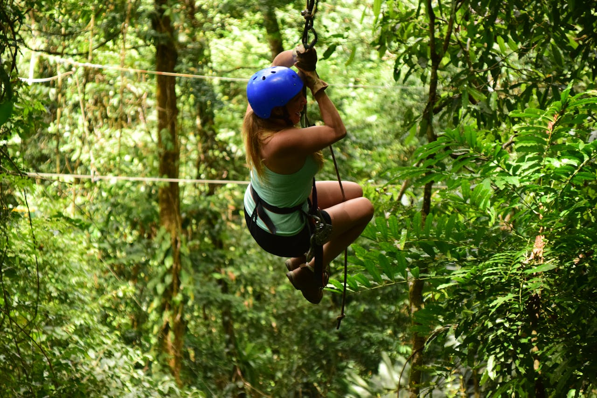
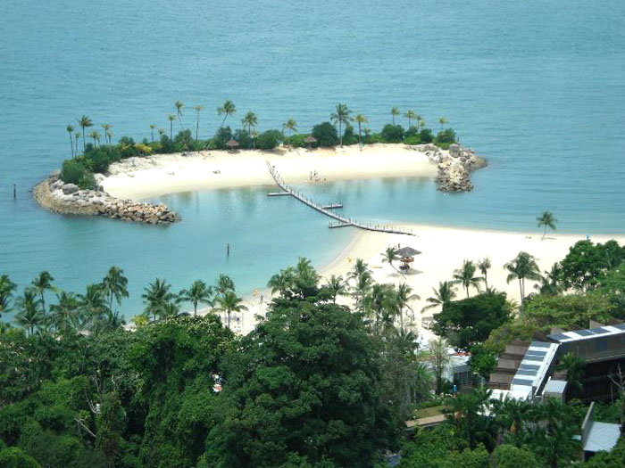

In Taniti, there are many activities on the island to do while you visit. These activities are split into two sections: Entertainment and Sightseeing.
Entertainment
There are many entertainment activities on the island for everyone to enjoy.
Sightseeing
Taniti is a perfect place for sightseeing due to nature and the island's beauty.
Frequently Asked Questions (FAQs)

Look at the frequently asked questions page, where we answer questions about the type of currency used and many more.
Contact Us
Need assistance with an expert or would like to know more about the island?
Contact us. We will gladly answer all your questions and doubts about Taniti.
Credit to Stock Picture Creators:
- Villaran, Melissa. “Woman on Zipline.” Pexels, https://www.pexels.com/photo/woman-on-zipline-4938780/
- giselaroyo. “Aerial view of a tropical island with sandy beach.” FreeImages, https://www.freeimages.com/photo/transparent-island-1575048
- 1ynnneo. “Question, Question Mark, Speech Bubble.” Pixabay, https://pixabay.com/illustrations/question-question-mark-speech-bubble-1846784/